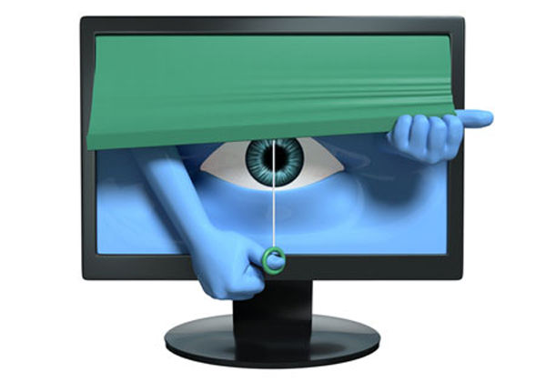

Spywares (logiciels espions) :
Les risques :
- -fuite d’information personnel sans que l’utilisateur n’en soit conscient
- -mobilisation des ressources du système d’information ( processeurs, mémoires, disques et réseau)
On estime aujourd’hui que 40% des spams seraient aujourd’hui envoyés à des adresses e-mails remontées par des spyware.
Comment se protéger :
- - Renseignez-vous bien sur la nature du logiciel que vous vous apprêtez à installer (lisez le contrat d'utilisation, notamment les sections au sujet de la collecte et du traitement des informations personnelles, et faites une recherche sur un moteur de recherche avec comme mots-clés le nom du logiciel et "spyware").
- - Scannez régulièrement votre PC avec un détecteur de spywares tel que Ad-Aware ou SpyBot.
- - Installez un pare-feu ou firewall. Windows XP et Vista en intègrent un de série. Si vous n'êtes pas sous ces systèmes d'exploitation, il y a ZoneAlarm par exemple. Une des fonctions d'un pare-feu est d'interdire aux programmes qui n'y sont pas autorisés à accéder à Internet (pour divulguer vos informations personnelles par exemple).
Site réalisé par Petit Samuel et Nathan Mas